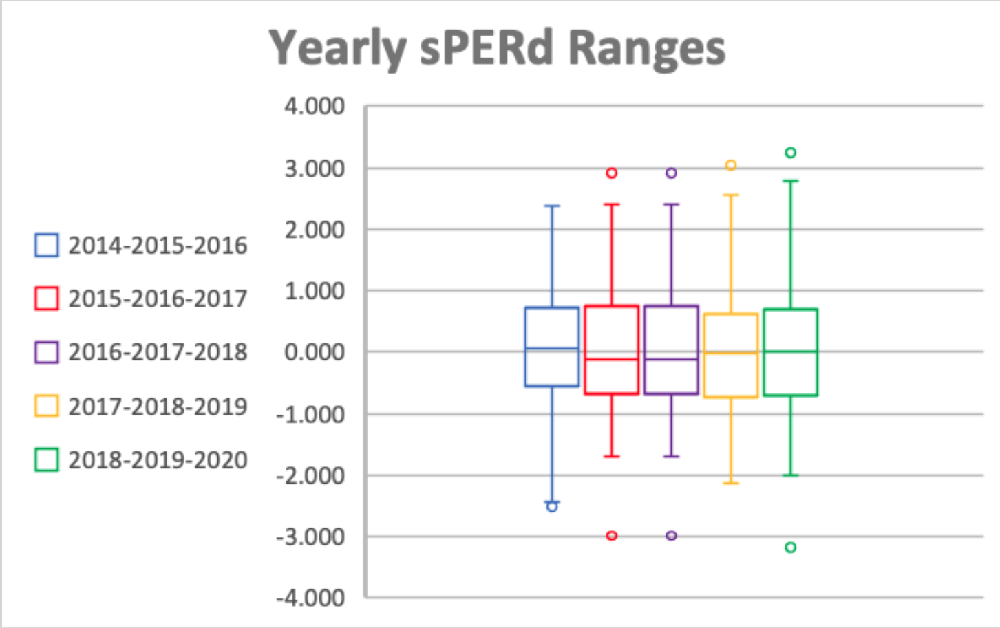
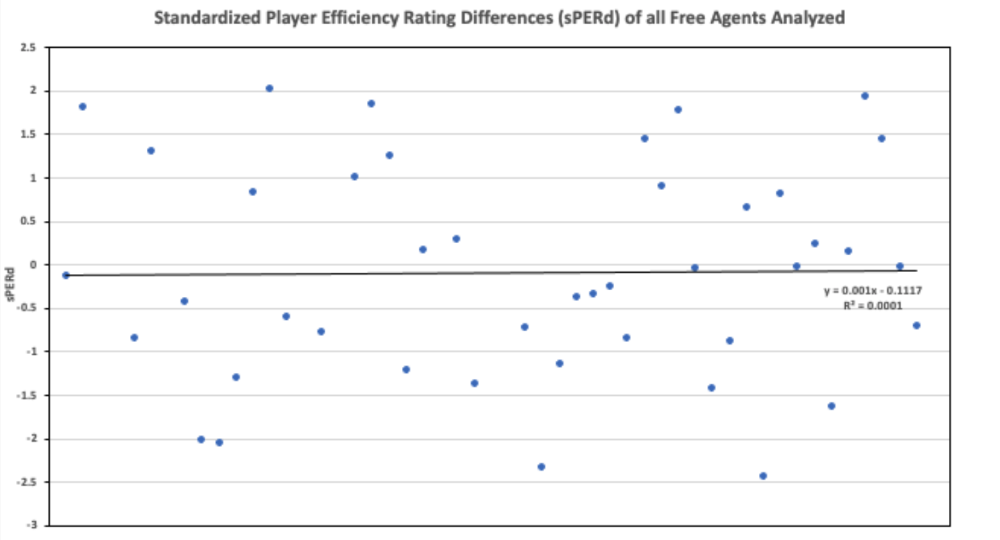

NBA Free Agency and Impact on Player Performance
By Josh Richland | March 30, 2021

This past off-season, several star free agent basketball players signed new, very lucrative, contracts. Gordon Hayward inked a huge deal to play for a new city. Brandon Ingram and Anthony Davis deservedly signed large extensions with their respective franchises. While the narrative is still being written for these players, it is possible to look at how signing a big contract has influenced an athlete’s level of play in the past. Therefore, looking at many of the biggest free agents in each of the past 5 years may provide insight as to how a player’s performance might change (if at all) post-signing. With the knowledge of imminent free agency, an athlete may play with the thought of increasing the size of a new contract. After the signing, is there a level of comfort or satisfaction, where the star can “let his guard down” knowing he has guaranteed money? Or does this new deal provide extra incentive to produce at an even higher level for himself, the team, the fans, and the city?
For the purposes of computation in this article, the season before a top free agent settles on a deal will be referred to as season A and the year post-signing will be season B.
Player Efficiency Rating (PER) will be utilized in order to evaluate the difference in a player’s performance across a two-year span. PER is a metric that adds up the positive components of an athlete’s game and subtracts the negative ones, resulting in a single number. The formula takes into account both offense and defense and is designed to have a league average of 15. Calculations will look at the entire population of players that participated in both season A and season B. Subtracting their PERs between the given span (referred to as PER difference or PERd), allows for the simple computations of the league average, standard deviation, and every individual’s PERd. This further permits for the standardization of the data. Doing so will highlight the players with significant drop offs or increases in their levels of play.
For reference, a standardized PERd (sPERd) with an absolute value of 1, puts a player in the minority. Anything larger than this can be deemed especially noteworthy. This is illustrated through the box and whisker plot above. The arms extending from each central box express data points that fall in the top 75% or bottom 25% of sPERd. Moving away from the quartile lines depicts points that markedly stray from the norm. The legend shows that the left numbers and center numbers are equivalent to season A while the middle and right years correspond to season B. The data for each of the past five years was collected to be standardized and independently analyzed. This was done for each player that participated in two consecutive seasons, from the 2014-2015 season until the 2019-2020 bubble.
On its face, there is an inconsequential distinction as to whether the sPERd of contract signers is significantly positive or negative. The average standardized value of these players is approximately -0.084. This illustrates that there is an extremely weak, but still evident, drop off in level of play. The size of the number, however, is not enough to suggest a direct correlation. The scatterplot below depicts this lack of association through the virtually horizontal trend line, in addition to the exceptionally small R-squared value (0.0001).
However, there are some significant outliers that can provide interesting insight. For example, between 2016 and 2017, the current league leader in scoring, Bradley Beal, had a significant increase in PER following his new contract with the Washington Wizards. After performing at a league average rate of 15.6 in 2016, he started competing with an efficiency of 20.1, post extension. This improvement corresponds to a sPERd of +1.79 which is significant. In fact, it is top six in the league for that year. Additionally, Khris Middleton of the Milwaukee Bucks had a large jump in the 2018-2019-2020 seasons. His PERd was +4.6 and his sPERd was an impressive +1.8, contributing to his first all-star birth. These players show obvious cases of increased level of play in their season B.
Another notable pattern is that in 80% of the years examined, there is a top signed player ranked in the bottom two of sPERd. And these are players who are considered stars! In the 2014-2015-2016 seasons, Anthony Davis had the most significant drop off in level of play. Despite playing a similar number of games each year (which the formula inherently accounts for), his sPERd was a paltry -2.43. Also, in the 2017-2018-2019 seasons, Chris Paul has a sPERd of -2.04 which was second to worst over the span. These examples contradict the previous cases, where players performed worse in their season B. Again, the relativeness of these values can be verified in the box and whisker plot above.
The data of free agents who switch teams, however, is quite different from those who did not. And while a majority of players did end up re-signing, others tended to play worse the ensuing year. For those changing franchises, the average sPERd was -0.68 while their counterparts had a mean of +0.15. This is a fairly sizable difference despite the numbers having an absolute value of less than one. The data suggests that re-signing free agents perform better than those who don’t by a sPERd of +0.83. Furthermore, free agents above the age of 30 had a lower sPERd than younger players. The disparity in sPERd is +0.85: averages of +0.11 compared to -0.74 for the older players. This too is a surprising distinction, with further implications: for instance, this indicates that veterans perhaps struggle to adapt to new systems or teams. One particular outlier is Jimmy Butler of the Miami Heat. After leaving Philadelphia at the age of 30, his PER increased by +3.4 points (+1.32 sPERd), the most of any relocating free agent. In fact, he was one of only two players to outperform himself with a new franchise.
Although this analysis shows that being in a contract year does not automatically impact a player’s performance, there is a slight correlation between level of play, age, and whether they relocate. While impending contracts are far from the sole explanation of player performance, amongst the highest signers, it does not seem to be a factor.